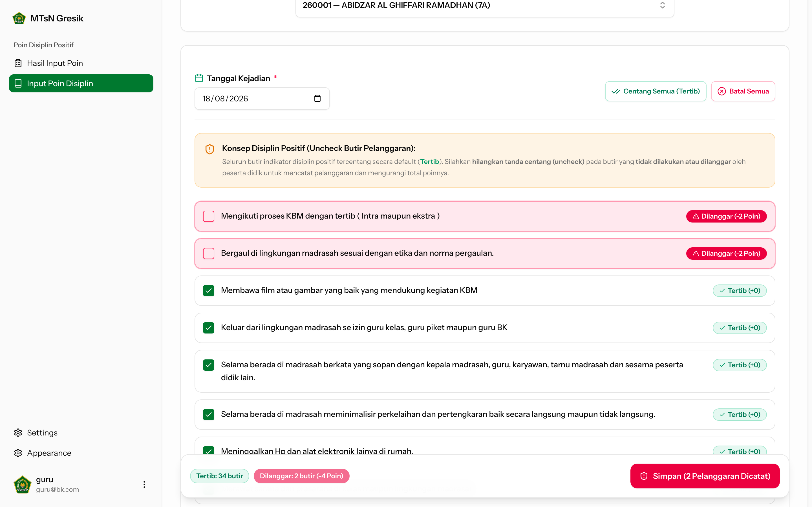
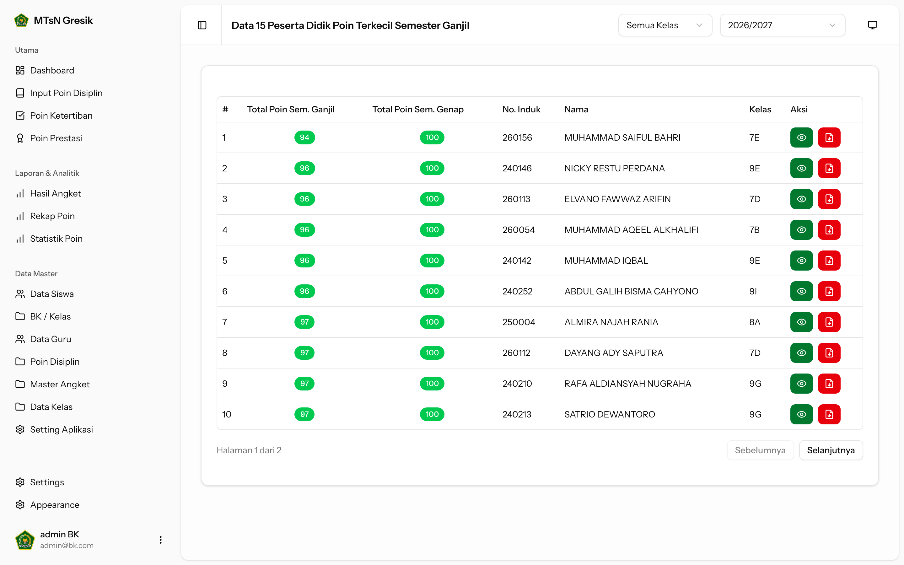

Case Study BKMTsNGresik v2 Building a Modern School Counseling Portal Continuous behavioral scoring, 180-indicator digital assessments, and automated bulk PDF reports. PHP 8.4 Laravel 12 Inertia React 19 Tailwind v4 bk.mtsngresik.sch.id — Student & Staff Portal
01 / Student Portal Needs Assessment Engine Digitalizing 180 Psychological Need Indicators Passwordless NISN onboarding with 4 domain filters and immutable annual state lock. Pribadi • Sosial • Belajar • Karir Passwordless NISN Locked After Submit Student Assessment — 180 Questions Instrument
02 / Analytics Engine Continuous Scoring Continuous Positive Scoring & Live Triage Dynamic formula: Total Poin = 100 Baseline - Infractions + Achievements. 🟢 Teladan (86–100+) 🔵 Standar (76–85) 🟠 Perhatian (66–75) 🔴 Pembinaan (≤65) Counselor Analytics — Score Distribution & Tier Ratios
03 / Teacher Workflow Direct Incident Entry Direct Infraction & Positive Merit Entry Teachers log positive merits and infractions in seconds with rule autocomplete. Instant Student Search + Positive Points (Prestasi) Zero Paper Binders Teacher Portal — Disciplinary Action & Merit Modal 
04 / Counselor Triage Proactive Intervention Early Warning: Top 15 Lowest Score Triage Surfaces at-risk students immediately so counselors intervene before issues escalate. Priority Score Ordering Multi-Year Incident Logs Proactive Counselor Check-In Counselor Dashboard — Top 15 Lowest Scoring Students 
05 / Document Engine Official Publishing Vector-Crisp Discipline Report Cards Instant in-browser rendering with official madrasah letterhead and counselor signatures. Official Madrasah Letterhead Dynamic Titimangsa Signatures Vector-Crisp Export Print Preview — Student Counseling Report Card
06 / Batch Processing Production Scale One-Click Merged Class PDF Synthesis Asynchronous class-wide PDF bundling for single-click school administration printing. Single Merged Class PDF Class ZIP Bundles PHP 8.4 • Laravel 12 • Inertia React 19 Export Manager — Bulk Class PDF Synthesis Dialog